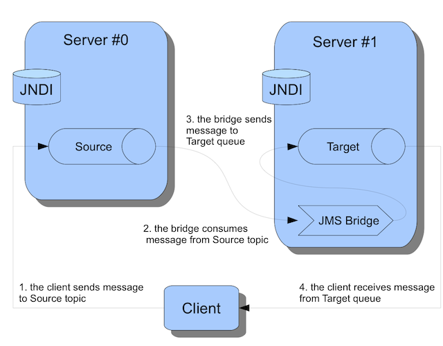

To run the example, simply type mvn verify from this directory, or mvn -PnoServer verify if you want to start and create the broker manually.
This example shows you how to create a JMS Bridge between two ActiveMQ Artemis brokers.

The example will use two ActiveMQ Artemis brokers:
source/topictarget/queueThe JMS Bridge will be started in the example code and be configured to bridge messages from the source destination (the topic hosted on broker #0) and the target destination (the queue hosted on broker #1)
The client will check the bridge works by:
The JMS Bridge is a POJO that we configure with both source and target JNDI configurations. In the actual example we are programmatically creating the Bridge.